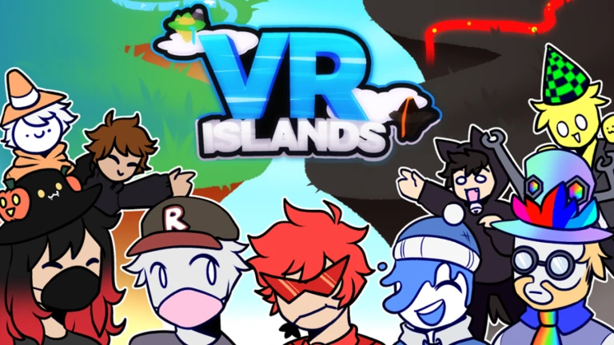

VR Islands

VR Islands is a sandbox project created by a friend. I added little contributions, such as playtesting and modeling.The game allows VR players to interact with non-VR players and other various "toys" around the map.
The game was relatively successful, gaining the attention of well known ROBLOX YouTubers and amassing over 10 million visits.
Play the game here
Screenshots